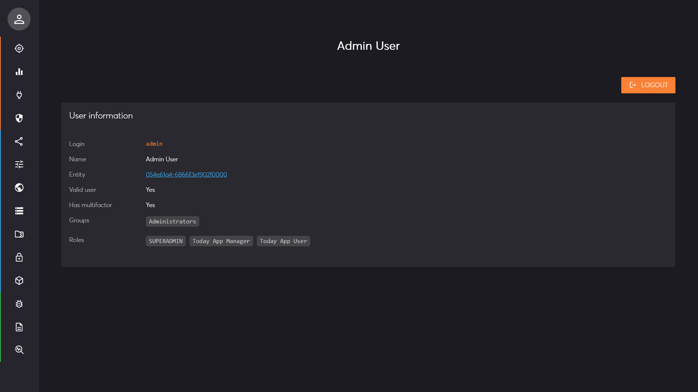

Management Interface Page: Current user
Description
This management interface page displays essential information about the currently logged-in user. It provides details such as the user's login name, group membership and applicable security roles. It also indicates if multifactor authentication is enabled.
Clicking on the logout button will securely terminate your active session on the server and in your browser.
You can also click on the different groups and roles to visualize all the details on the overview page.
